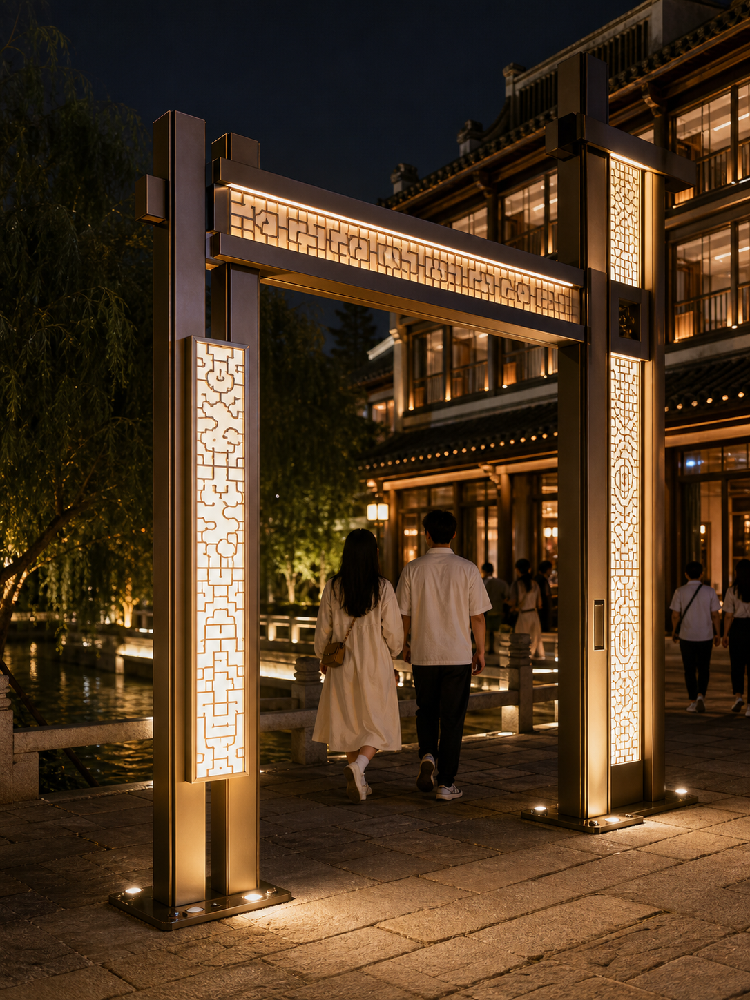
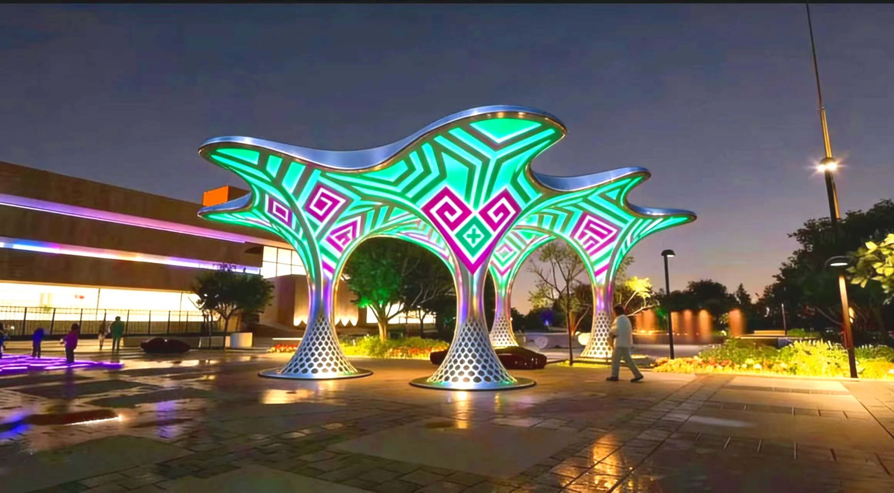

Hangzhou Asian Games
Related lighting-product or project collaboration.
We separate management-confirmed collaboration experience from visual directions that still require site verification, engineering, and a written quotation.
Company management confirms related lighting-product or project collaboration for the events below. Exact scope is governed by project records; this does not claim official endorsement, exclusivity, or sole-supplier status.
Related lighting-product or project collaboration.
Related lighting-product or project collaboration.
Related collaboration in the Guangzhou competition area.

An arrival landmark establishes recognition; repeated nodes shape walking rhythm; water and architecture add depth. Heritage, fire access, power, drainage, foundations, and maintenance must be verified before delivery.
The images below explain scale and spatial direction. Materials, dimensions, protection ratings, controls, cost, and schedule require project-specific confirmation.

Organize the view around water level, anchoring, shore power, wind, audience direction, and maintenance.

Balance distance recognition, photography, pedestrian clearance, events, and maintenance.

Coordinate vehicle sightlines, porte-cochère scale, brand color temperature, and seasonal change.
Send photos or video, dimensions, power locations, budget range, and target opening date.